你不是走進一個空間，你是被引導進去的。
You are not walking into a space — you are being guided in.
Floor Plan
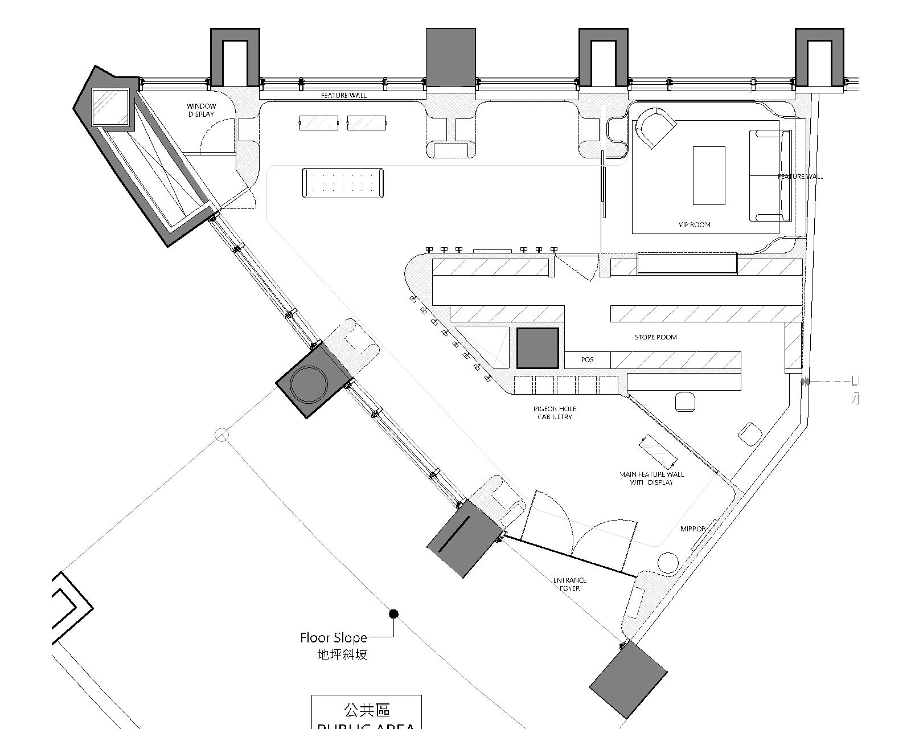
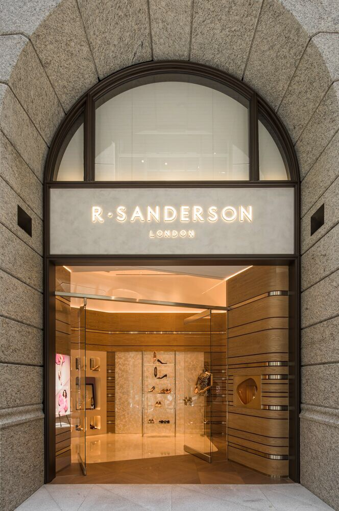
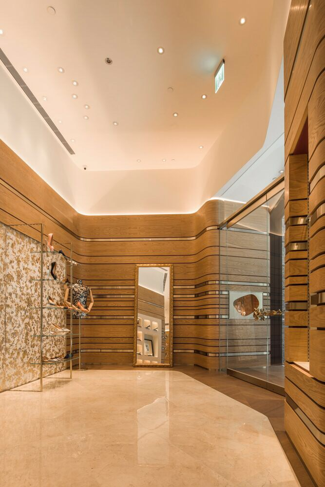
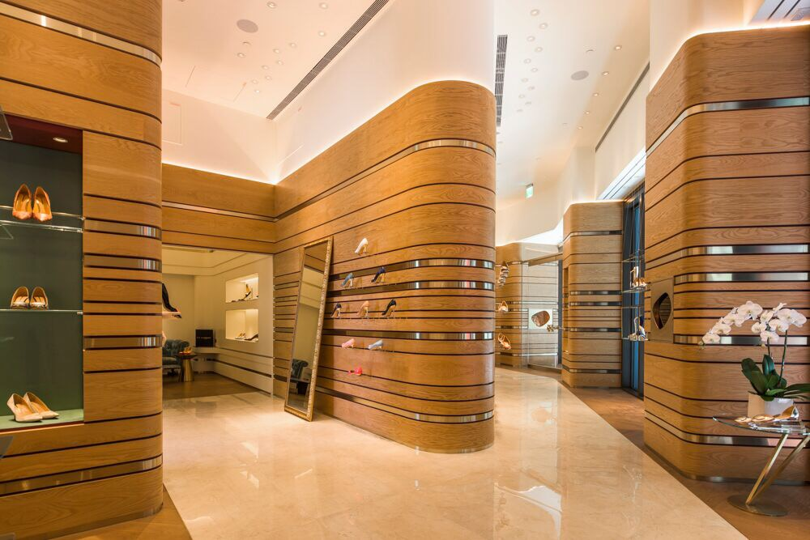
01
R. Sanderson 的入口刻意內縮。這個縮口不是美學決定，是一個讓身體先於眼睛進場的策略——當你的腳先移動，你的注意力才會跟上。
R. Sanderson's entrance is deliberately compressed. This constriction is not an aesthetic decision — it is a strategy that lets the body enter before the eyes. When your feet move first, your attention follows.
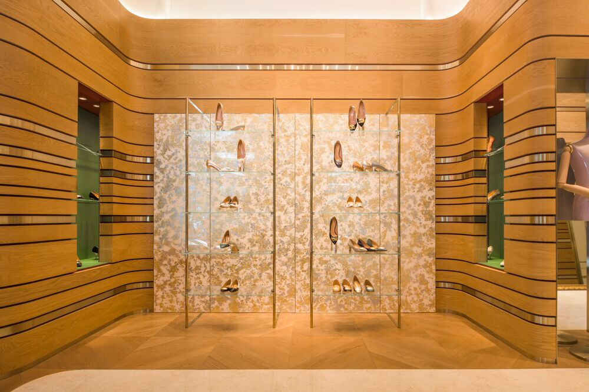
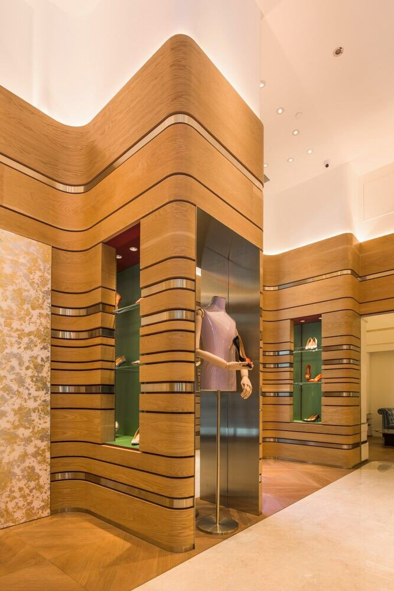
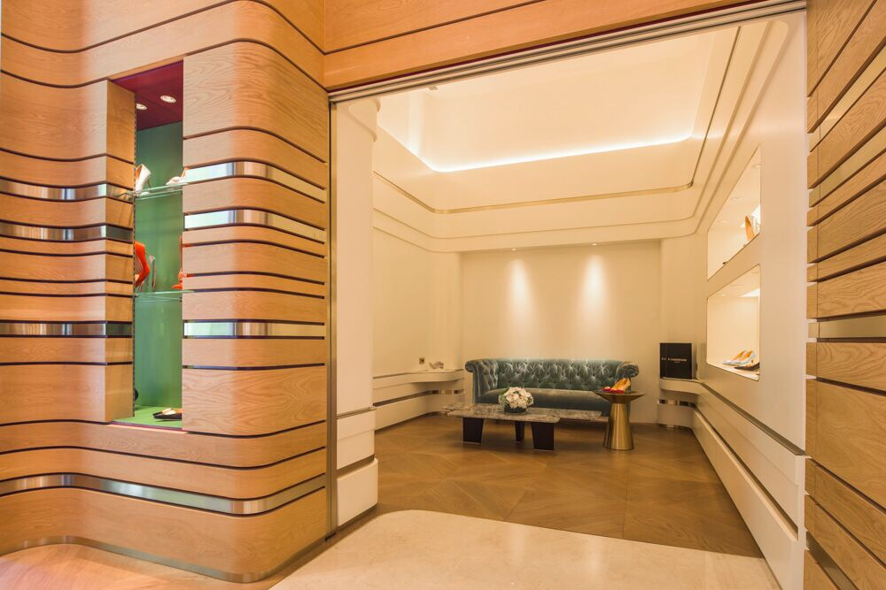
02
零售空間最常把所有答案擺在入口，但一眼看完，就不需要移動了；不移動，就沒有更多的慾望。路徑才是零售設計真正的產品。進門後，動線導向三個節點，構成一個內縮的三角環，每次轉向都有一個未曾預期的展示在等著你。
Retail spaces typically place all answers at the entrance, but once everything is seen, movement stops — and without movement, desire cannot accumulate. The path is the real product. Inside, the route leads through three nodes forming an inward triangle; at each turn, an unexpected display waits.
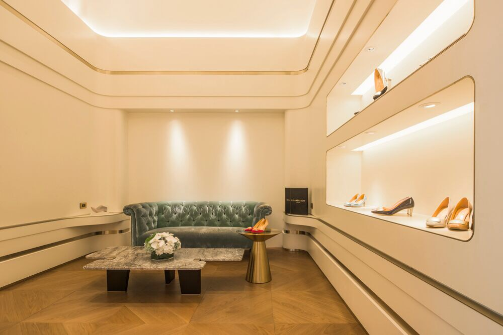
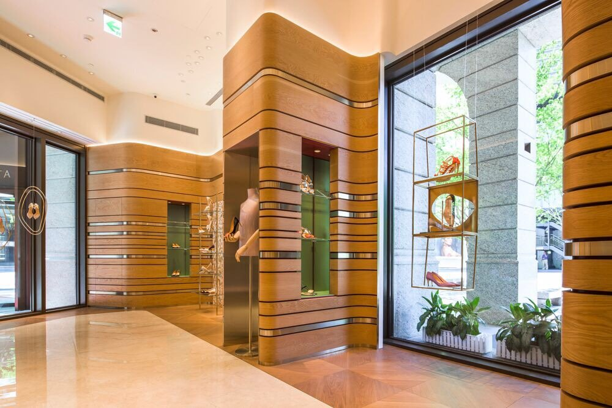
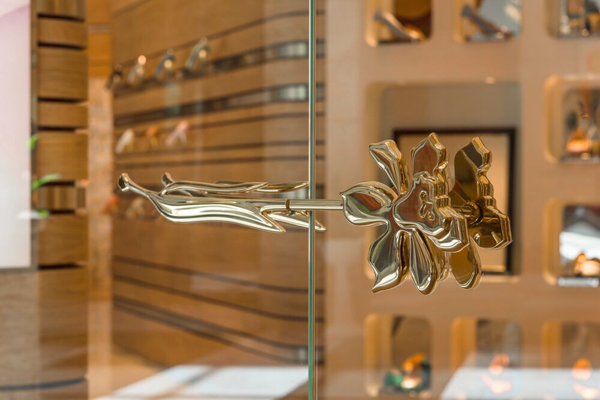
03
動線末端是 VIP 試穿區，曲面牆圍塑，尺度稍稍放大，讓人在不自覺間放慢、坐下、停留。空間不是容器，是節奏。決策發生在最放鬆的時刻。
At the end of the path sits the VIP fitting area — curved walls, expanded scale, a place where people slow without knowing why. Space is not a container; it is rhythm. Decisions happen in the most relaxed moment.
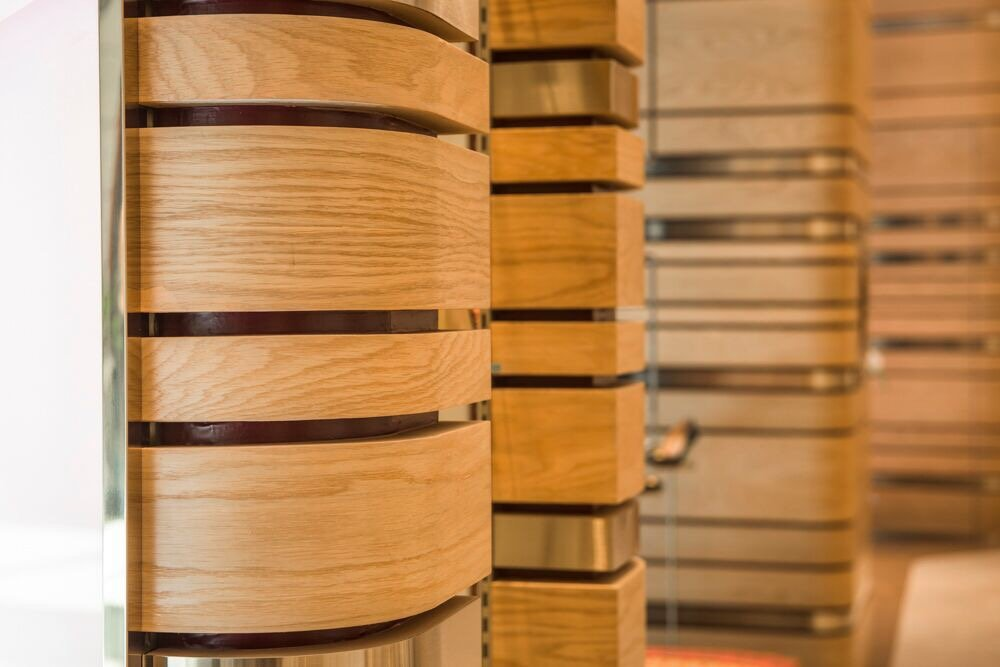
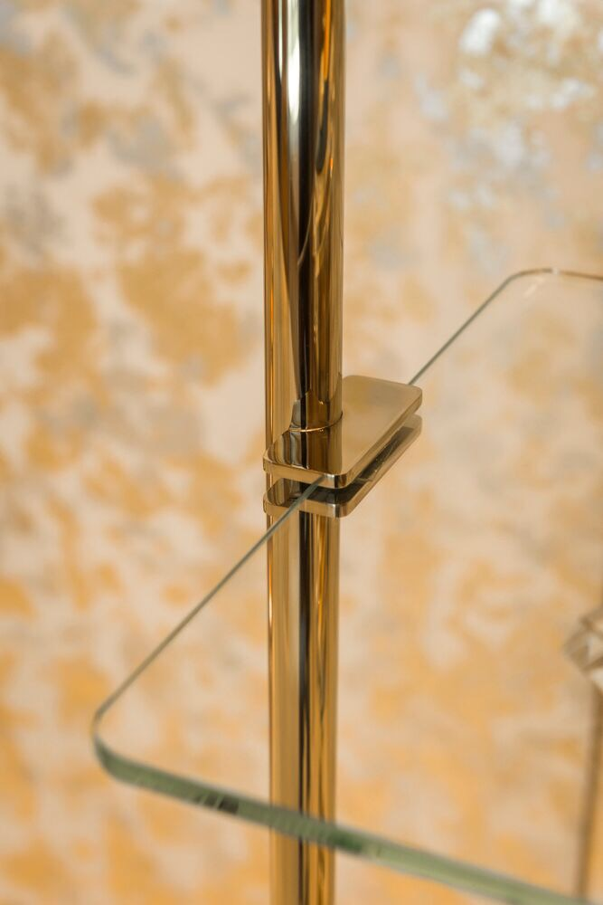
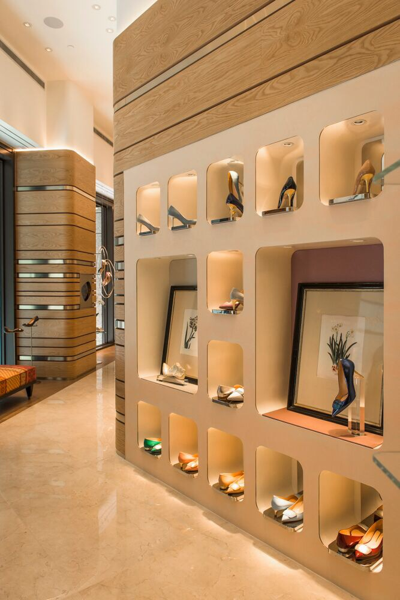
04
材質從入口到內部逐漸轉暖。外部立面以金屬與玻璃建立理性的第一印象，進入後木質與皮革接手，觸感從冷轉溫。這個轉變不是刻意的風格切換，是動線本身的情緒曲線——從街道的速度，到試穿時的靜止。
Materials warm progressively from entrance to interior. The facade — metal and glass — establishes a rational first impression; inside, wood and leather take over, touch shifting from cool to warm. This transition is not a deliberate style change; it is the emotional curve of the path itself — from the speed of the street to the stillness of trying on.
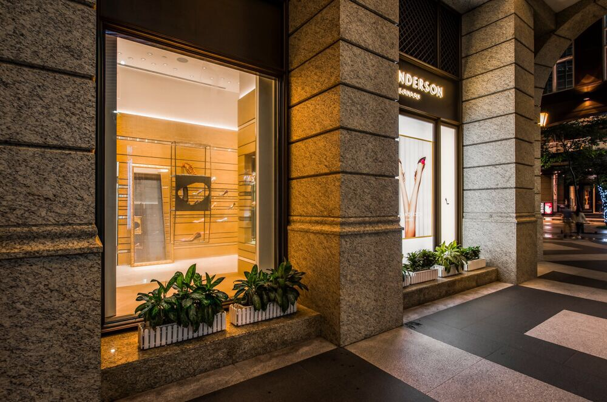
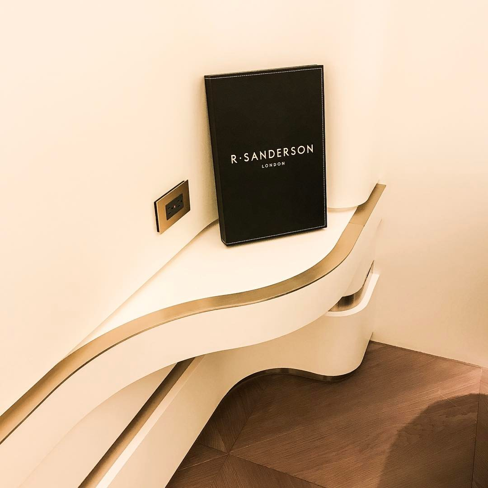
05
整個空間的燈光沒有使用主燈。軌道燈沿著動線方向排列，每一組光源只照亮一個節點的展示。走在路徑上的人不會意識到光在引導自己——這就是好的零售燈光：讓人以為自己是自由移動的，但每一步都在設計裡。
The space uses no main fixture. Track lights align with the circulation path; each group illuminates only one node's display. The person on the path never realizes light is guiding them — this is what good retail lighting does: making people believe they move freely while every step stays within the design.
All Photos